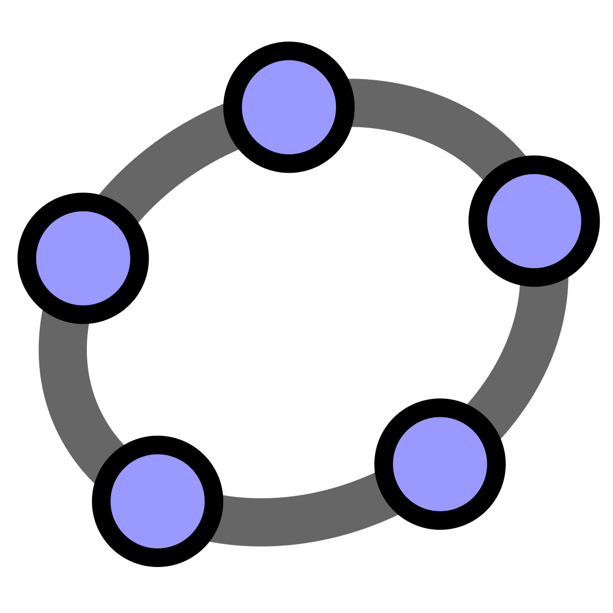
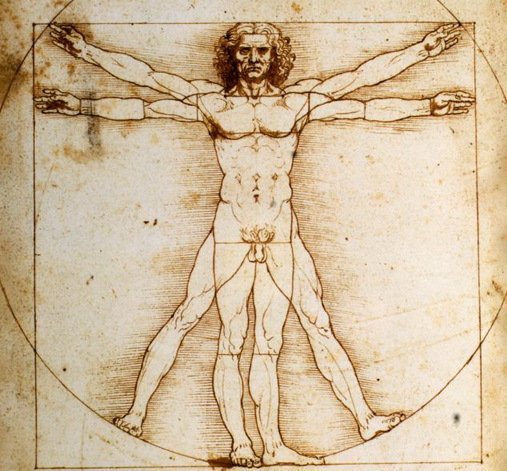

Aplicativos Para Navegador Web
Arthur Kroth, Laura Beatriz e Leonardo Schultz
Aqui vão ser listados aplicativos para navegador web e suas utilidades, aplicativos para navegador web são aplicativos que podem ser acessados pelo navegador sem a necessidade de baixa-los no computador

GeoGebra é um aplicativo de matemática dinâmica que combina conceitos de geometria e álgebra em uma única GUI. Sua distribuição é livre, nos termos da GNU General Public License, e é escrito em linguagem Java, o que lhe permite estar disponível em várias plataformas.
Nesse site você encontra mais de 600 videoaulas, exercícios, dicas e uma biblioteca de provas de diversas instituições. As aulas e ferramentas disponíveis são totalmente gratuitas.

Disponibiliza diferentes tipos de materiais para aprendizagem de matemática, como áudios, vídeos, simuladores, guias e experimentos. O site faz parte do projeto 'Condigital', do Ministério da Educação (MEC).
Oferece diversas opções para o estudante se divertir e aprender. Conta também com aulas e um banco de questões aberto para consulta. Além disso, o site também fornece uma lista de links para os interessados em saber mais sobre a disciplina.

É um projeto criado pela Universidade do Colorado Boulder, oferece dezenas de simuladores para o estudo da física e da matemática, um exemplo é o simulador ‘’O Homem em Movimento’’, que tem como objetivo demonstrar os cálculos de velocidade e aceleração em um corpo.